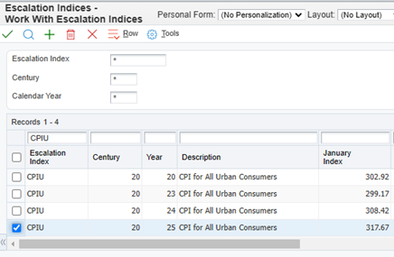
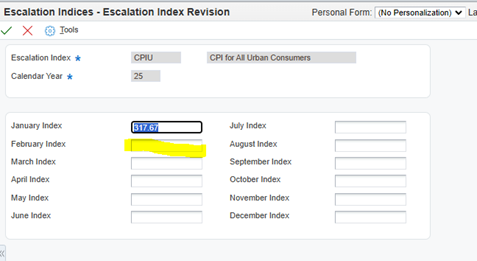
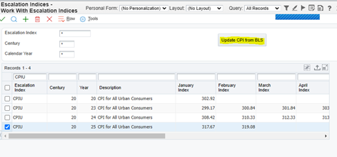
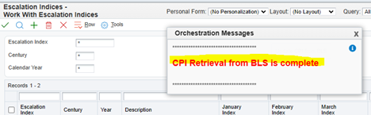
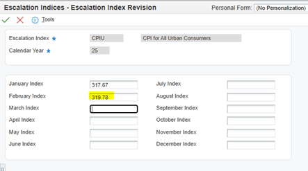
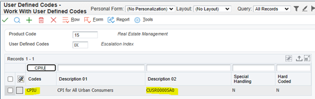
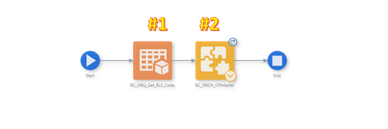
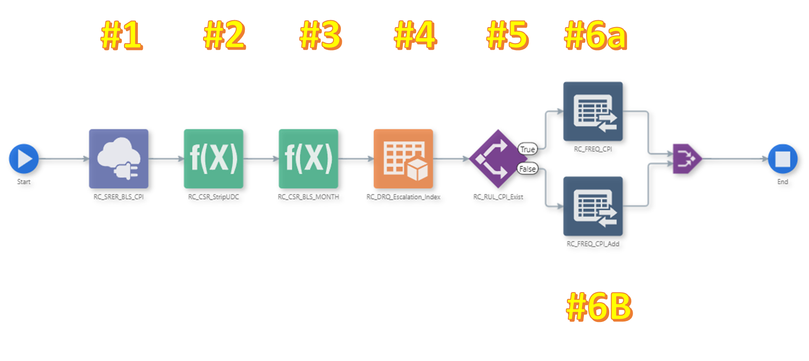
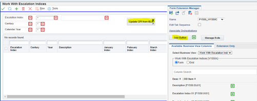

By Mark Dixon, Rockford Consulting LLC
The following is a collection of user defined objects (UDOs) developed for the JD Edwards Real Estate Management module that retrieves the consumer price index (CPI) for a given month from the appropriate US government website and populates the data into JDE.
The JDE Real Estate Management module allows clients to manage all aspect of leasing and property management, including managing the payment of and billing for leases. Many of the terms of these leases include provisions to automatically escalate the lease amount to be paid or billed based on the rate of inflation as defined by the U.S. Bureau of Labor Statistics (BLS). This example automates the retrival of the index values and population into JDE for the current month .
CPI indices are maintained by the user via P1550, Work with Escalation Indices. From here one can either add a new index or revise an existing index. Let’s assume we are revising an existing index in March of 2025, which will update February as the last complete month:
After drilling into year 2025, one can see the February index is blank:
Rather than manually update the value, hit the Close button and go back the Work With Escalation Indices screen. Note that a button titled “Update CPI from BLS” is in the header area. Click that button:
You may notice a progress bar in the upper right corner as the function runs. When the update is complete you should see the following confirmation screen:
After the process is complete, drill back into the Escalation Index Revision screen. Notice that the February index is now populated:
The BLS.gov website allows for JSON connections to retrieve indices via the following format:
Registration is required (no payment needed) to obtain a key. After receiving the key, we must next create a cross reference to match up the BLS indices with our JDE indices.
The CPI indices maintained by BLS.gov have their own unique identifiers. For example, the Consumer Price Index for Urban Wage Earners, which we have set up in JDE as CPIU, is referred to by its series ID of CUUR0000SA0.In order to update the proper index in JDE, we chose to match up the JDE UDC code for the index in question with the BLS series ID via the JDE UDC table 15/IX using Description 2:
This set up will not only identify the indices for update but will also serve as the cross reference between JDE and BLS.gov.
The following orchestration will update all JDE CPI indices in table F1550 that have a cross reference to a BLS.gov series ID:
#1 - Data Request – Retrieves all CPI indices in JDE UDC 15/IX that have a matching BLS code in Description 02
#2 - Orchestration - Calls the orchestration (detailed below) iteratively for all CPI indices retrieved in step #1 to update the JDE CPI index table (F1550) with the current month’s values from the BLS.gov website
The orchestration in step #2, above, updates an individual CPI index. It may be called directly for an individual CPI index or called iteratively in a higher-level calling orchestration as described above to update all flagged indices: #1 - Data Connection – Constructs a JSON request for the BLS.gov website, passing the BLS Series ID corresponding to the JDE CPI index and returns the current data.
#2 - Custom Service Request – Strips leading spaces from the UDC value for 15/IX
#3 - Custom Service Request – Converts the data for the returned BLS Series ID from a 4 digit year to a 2 digit year as required for JDE index entry.
#4 - Data Request – Determines whether the CPI Index for the year returned by the current BLS data exists by returning the count from the JDE escalation index table, F1550. If count=0, a later step must add the row. If the count=1, a later step must update an existing row.
#5 - Rule – If the count for the index/year in F1550 is 1, branch to the “update” step, #6a. If the count is 0, branch to the “update” step, #6b.
#6a - Form Request – Updates an existing row in F1550, Escalation Indices, with the current value.
#6b - Form Request – Adds a new row to F1550, Escalation Indices, to the current year with the current value.
Create a Form Extension, add a button and associate the orchestration with the button:
Your CPI retrieval function should now be ready to use.
In this exercise we showed how one can use a simple function to update all CPI indices automatically - exclusively using User Defined Objects (UDOs) that don't require development resources or modifications to base JDE code. All elements should survive future application and tools release upgrades with little to no retrofit. If you have any questions/comments on this or similar functions, please use our Contact Us feature.
Back to Home